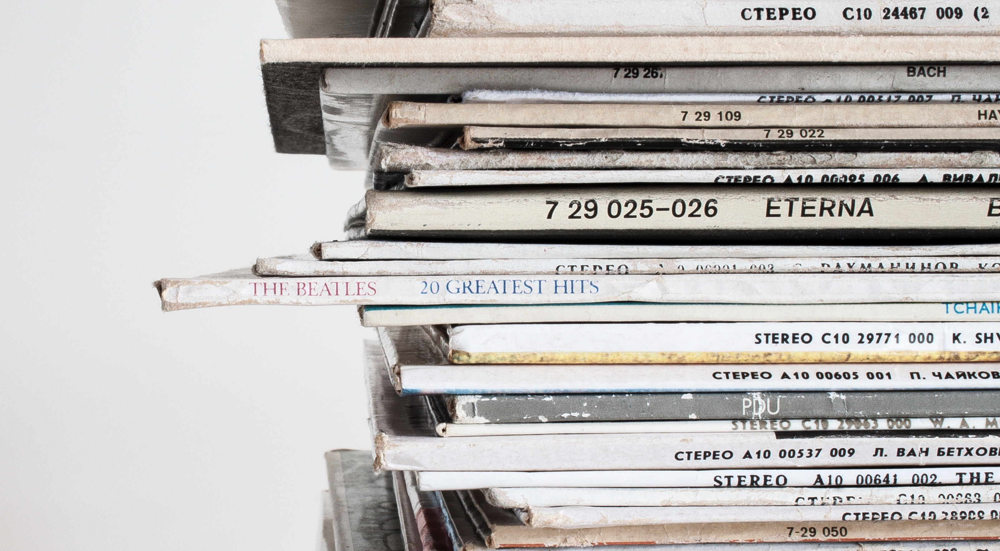

QUICK FACT: If all our newspaper was recycled, we could save about 250,000,000 trees each year.
Americans use 85,000,000 tons of paper a year; about 680 pounds per person. The average household throws away 13,000 separate pieces of paper each year. Most is packaging and junk mail.
Each ton (2000 pounds) of recycled paper can save 17 trees, 380 gallons of oil, three cubic yards of landfill space, 4000 kilowatts of energy, and 7000 gallons of water. This represents a 64% energy savings, a 58% water savings, and 60 pounds less of air pollution.
According to the National Recycling Coalition (NRC), the following are four of the ten most important materials to recycle: newspaper, corrugated cardboard, magazines, and mixed paper. As such, the paper recycling rate in the U.S. has improved and the amount of waste has decreased by 20 million tons from 2000 to 2014.
Click here to learn about NYC Government Protect Your Identity Event
Click here to learn about Clean Go Green at Columbia University